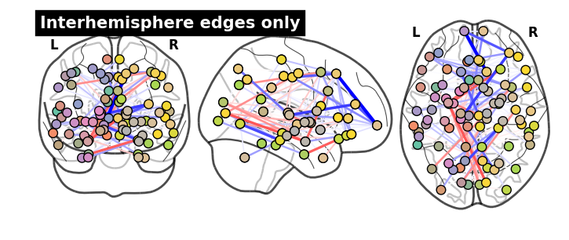
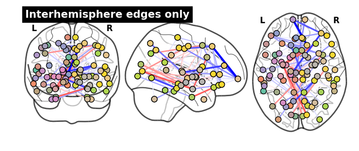
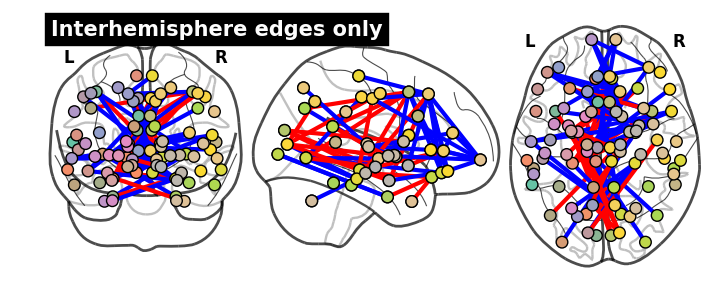
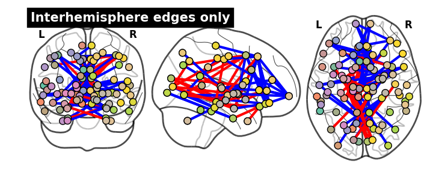

PNC classification experiment results (old)
This is results from an old experiment I ran, where I tried to classify the gender of a subject from the PNC dataset using structural brain connectivity features.
Contents
from IPython.display import HTML
HTML('''<script>
code_show=true;
function code_toggle() {
if (code_show){
$('div.input').hide();
} else {
$('div.input').show();
}
code_show = !code_show
}
$( document ).ready(code_toggle);
</script>
<form action="javascript:code_toggle()"><input type="submit" value="Click here to toggle on/off the raw code."></form>''')
What is this?
(originally created 11/03/2015) - here, I go further and analyze the result a bit more - I’ll dig in the stability of model selection by studying the gridsearch result
import numpy as np
import matplotlib.pyplot as plt
import matplotlib as mpl
import cPickle as pickle
import pandas as pd
import os
import sys
import sklearn.metrics as skmetrics
import warnings
from IPython.display import display
import tak.tak as tw
import tak.data_io as twio
reload(tw)
reload(twio)
from pandas import DataFrame as DF
from pandas import Series as SR
pd.set_option('precision', 4)
# pklname = "pnc_ncv10fold_acc_sklLogregL1_age_q1_rsouter336970_rsinner337862.pkl"
pklname = 'pnc_ncv10fold_acc_sklLogregL1_age_q2_rsouter168519_rsinner50426.pkl'
# pklname = 'pnc_ncv10fold_acc_sklLogregL1_age_q3_rsouter271477_rsinner175307.pkl'
data_fullpath = "/home/takanori/work-local/tak-ace-ibis/python/analysis/pnc/"+\
"ncv_conn_random/dump/sklLogregL1/"+pklname
Load data
with open(data_fullpath) as f:
pkl_in = pickle.load(f)
# assign variables to workspace
for key,value in pkl_in.iteritems():
globals()[key] = value
Show classification result
tw.clf_summary(ytrue,ypred)
| scores | counts | ||||||||||||||
|---|---|---|---|---|---|---|---|---|---|---|---|---|---|---|---|
| ACC | TPR | TNR | FPR | FNR | F1 | PPV | NPV | TP | TN | FP | FN | P | N | ALL | |
| value | 0.784 | 0.754 | 0.807 | 0.142 | 0.246 | 0.748 | 0.742 | 0.816 | 98 | 142 | 34 | 32 | 132 | 174 | 306 |
df_results = tw.clf_summary(ytrue,ypred)
fpr,tpr,auc = tw.roc(ytrue,score)
plt.plot(fpr,tpr,label='(AUC = {:.4f})'.format(auc))
plt.plot([0, 1], [0, 1], 'k--',label='random',lw=1)
plt.xlabel('FPR')
plt.ylabel('TPR')
plt.title('')
plt.legend(loc='best')
plt.grid('on')
Display median coefficients
Get node info
from nilearn.plotting import plot_connectome
mni_coord = tw.get_mni_coord86()
df_node = tw.get_node_info86()
display(df_node.head(3))
| label | name_full | lobes | name_short | system | x | y | z | hemisphere | xmni | ymni | zmni | |
|---|---|---|---|---|---|---|---|---|---|---|---|---|
| 0 | 1001 | ctx-lh-bankssts | L temporal | Bank of the Superior Temporal Sulcus | auditory | 178 | 158 | 83 | L | -54.15 | -45.20 | 9.35 |
| 1 | 1002 | ctx-lh-caudalanteriorcingulate | L frontal | Caudal Anterior Cingulate | cingulo-opercular | 130 | 91 | 102 | L | -4.35 | 17.15 | 29.15 |
| 2 | 1003 | ctx-lh-caudalmiddlefrontal | L frontal | Caudal Middle Frontal | fronto-parietal | 158 | 101 | 121 | L | -36.45 | 10.20 | 47.45 |
Construct median weight vector for each age-group
coef_ = []
for clf_tuned in cv_summary['clf_tuned']:
try:
coef_.append(clf_tuned.coef_.ravel())
except:
# SPAMS toolbox: I assigned w_ for coefficient....fix this in future version?
coef_.append(clf_tuned.w_.ravel())
# convert list to ndarray
coef_array = np.vstack(coef_).T
# print coef_array.shape
coef_median = np.median(coef_array,axis=1)
Display median connmat
reload(tw)
#=== decide on x/y ticks === #
# tick = df_node.lobes.values
# tick = df_node.label.values
# tick = df_node.name_full.values
# tick = df_node.name_short.values
tick = df_node.system.values
tick = df_node.system.values
plt.figure(figsize=(12,10))
tw.imconnmat(coef_median,tick,tick)
plt.colorbar(fraction=0.046, pad=0.04, ticks=tw.cbar_ticks())
plt.title('Median coefficients (nnz = {:4})'.format(np.count_nonzero(coef_median)),
fontsize=24)
tw.imconnmat_hemi_subplot_86(coef_median,suptitle='Median coefficients (nnz = {:4})'.format(np.count_nonzero(coef_median)))

Glass-brain
- for further brain space analysis, I should display these in BNV in Matlab
_ = plot_connectome(tw.sqform(coef_median), mni_coord, node_size=70,
title='(nnz = {:4})'.format(np.count_nonzero(coef_median)))
# also show interhemisphere
W=tw.sqform(coef_median)
_ = plot_connectome(W[:43,:43], mni_coord[:43], node_size=70,
title='Edges in left-hemisphere only')
_ = plot_connectome(W[43:,43:], mni_coord[43:], node_size=70,
title='Edges in right-hemisphere only')
#
W_inter = W
W_inter[:43,:43] = 0
W_inter[43:,43:] = 0
_ = plot_connectome(W_inter, mni_coord, node_size=70,
title='Interhemisphere edges only')
 

Trinarized median connmat after thresholding
thresh = 0.9
coef_thresh = tw.threshold_L1conc(coef_median, thresh)
# triinarize?
coef_thresh[coef_thresh>0] = +1
coef_thresh[coef_thresh<0] = -1
plt.figure(figsize=(12,10))
tw.imconnmat(coef_thresh,tick,tick)
plt.colorbar(fraction=0.046, pad=0.04, ticks=tw.cbar_ticks())
titlestr = ('Median L1-thresholded at {:2} (nnz = {:4})'.
format(thresh,np.count_nonzero(coef_thresh)))
plt.title(titlestr,fontsize=24)
tw.imconnmat_hemi_subplot_86(coef_thresh,suptitle=titlestr)

Glassbrain
_ = plot_connectome(tw.sqform(coef_thresh), mni_coord, node_size=70,
title='(nnz = {:4})'.format(np.count_nonzero(coef_thresh)))
# also show interhemisphere
W=tw.sqform(coef_thresh)
_ = plot_connectome(W[:43,:43], mni_coord[:43], node_size=70,
title='Edges in left-hemisphere only')
_ = plot_connectome(W[43:,43:], mni_coord[43:], node_size=70,
title='Edges in right-hemisphere only')
#
W_inter = W
W_inter[:43,:43] = 0
W_inter[43:,43:] = 0
_ = plot_connectome(W_inter, mni_coord, node_size=70,
title='Interhemisphere edges only')
 
